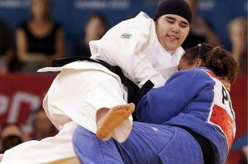
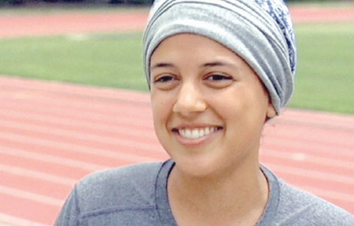
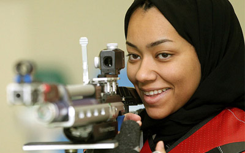
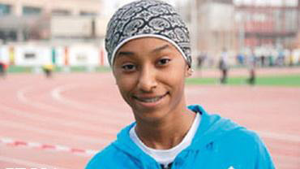
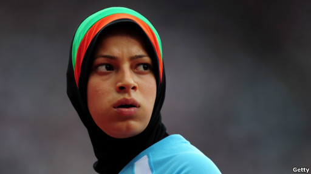
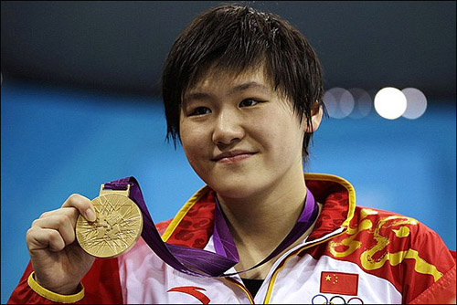
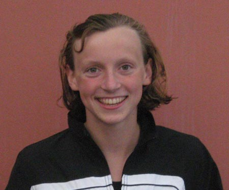
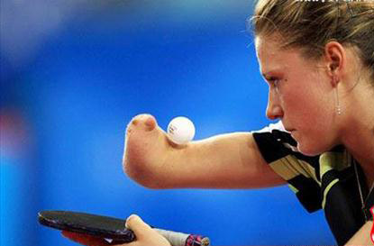

|
|

لندن 2012 ؛ جایی که جهان "زنان" را ستود
مهدی قدیمی
سه شنبه17 مرداد 1391
بازی های المپیک همواره یادآور پیام "صلح" برای ملت های جهان بوده است، اما المپیک لندن با داشتن یک ویژگی از تمام ادوار پیشین خود متمایز می شود. ویژگی ای که پیام این المپیک را به آرمانی فراتر از صلح ارتقا داده و حالا همه ملت های جهان در لندن، در کنار صلح آرمانی به نام "برابری" را نیز به تماشا می نشینند. تلاش برای رفع تبعیض همواره در جوامع مختلف بشری وجود داشته و یکی از مهمترین جلوه های این تلاش که در قرن های اخیر بروز و ظهور بیشتری داشته، جنبش های برابری حقوق زنان و مردان است. تلاش هایی که از مبارزات زنان آمریکایی و اروپایی در اوایل قرن بیستم برای دستیابی به حق رای آغاز شد و حالا در سومین المپیک قرن بیست و یکم می رود تا در بعد جهانی به ثمر بنشیند.
اگر المپیک 2012 لندن را از منظر نقش زنان بررسی کنیم، بیشتر می توان به تمایز این المپیک با ادوار گذشته پی برد. المپیکی که برای اولین بار در طول تاریخ ، همه ۲۰۴ کشور حاضر در بازیها با حداقل یک ورزشکار زن در آن شرکت کرده بودند، در ادامه هم با مسائلی که پیرامون حضور این زنان در المپیک به وجود آمد، جلوه هایی از پایان عصر انزوای زنان در جهان را به نمایش گذاشت.
در گذشته ای نه چندان دور ، در المپیک ۱۹۹۶ آتلانتا، ۲۶ کشور جهان هیچ نماینده زنی همراهشان نداشتند.
عربستان سعودی، قطر و برونئی سه کشور آخری بودند که به ورزشکاران زنشان اجازه حضور در بازیهای المپیک را دادند.
"شیخ عبدالعزیز بن عبدالله آل الشیخ" از مفتی های سعودی، پیش از آغاز المپیک با تاکید مجدد بر ممنوعیت شرعی حضور زنان در المپیک گفته بود : خبرهای منتشر شده در اینترنت درباره صدور فتوای موافقت با شرکت زنان در المپیک لندن دروغ و افترا است.
شاهزاده "نواف بن فیصل" رییس اداره جوانان عربستان هم اعلام کرده بود که از موضوع شرکت زنان سعودی در المپیک لندن و دیگر بازی های المپیک استقبال نمی شود. بن فیصل همچنین گفته بود: دختران جوانی که در مسابقات بین المللی ورزشی از سوی عربستان شرکت می کنند، کسانی هستند که در خارج زندگی می کنند، و عربستان از آنها می خواهد که ارزشهای اسلامی را رعایت کنند.
اما در نهایت از عربستان سعودی وجدان علی سراج عبدالرحیم شهرخانی در وزن ۷۸ کیلوگرم جودو و سارا عطار در دوی ۸۰۰ متر در رقابتهای المپیک شرکت کردند و اگرچه استفاده از حجاب در ورزش جودو برای شرکت کننده عربستانی "خطرناک" تشخیص داده شده بود، اما بالاخره مجامع جهانی قبول کردند که او با حجاب مسابقه بدهد و چنین نیز شد.

علی سراج عبدالرحیم شهرخانی
سارا عطار نیز در کالیفرنیای آمریکا به دنیا آمده و بزرگ شده است. او در دانشگاه پپردین تحصیل می کند و آرزو دارد زنانی که در عربستان سعودی زندگی می کنند هم شرایطی مشابه او برای ورزش کردن و آموزش دیدن داشته باشند.

سارا عطار
قطر نه تنها چهار ورزشکار زن به بازیها اعزام کرده بلکه یک تیرانداز زن، بهیه منصور الحمد، را هم پرچمدار کاروانش کرد. ندا ارکاجی در شنا، نور الملکی در دوومیدانی و اَیا مجدی در تنیس روی میز نیز در بازیهای لندن به نمایندگی از قطر شرکت دارند.

بهیه منصور الحمد

نور الملکی
از برونئی هم مضیه محوسین در رشته دوومیدانی به لندن آمده است.او به خبرنگاران گفت: "من خیلی احساس افتخار می کنم. انگار سفیر کشورم هستم."
تهمینه کوهستانی قهرمان ۲۲ ساله دو سرعت افغانستان هم به عنوان تنها زن حاضر در کاروان ورزشی افغانستان و سومین زن افغانی که در تمام ادوار المپیک شرکت کرده است، به شبکه خبری آمریکایی ان بی سی گفت: "بسیار سخت است که من اینجا هستم. خیلی ها من را حمایت می کنند ولی خیلی ها هم نمی کنند. آنها می گویند من مسلمان خوبی نیستم."

تهمینه کوهستانی
پس از اعلام خبر حضور دو ورزشکار زن در تیم عربستان سعودی، ژاک روگه، رئیس کمیته بین المللی المپیک، در مصاحبه ای گفت: "این حقوق بشر است. زنان حق شرکت در ورزش را دارند. آنها ورزش کردن را دوست دارند و ما باید مطمئن شویم که موانع را از سر راهشان برداشته ایم. ما به طور مستمر با کمیته المپیک عربستان سعودی در این مورد گفت و گو داشتیم و خوشحالم که می بینم تلاشهایمان به نتیجه رسیده است."
زنان شگفتی ساز
نکته جالب توجه اینکه، پررنگ تر شدن حضور زنان در المپیک، تنها در کشورهای جهان سومی محدود نبود و این موضوع در کشورهای پیشرفته، نمود بیشتری داشت. چنانکه برای اولین بار، ۲۶۹ ورزشکار زن در تیم المپیک آمریکا حضور داشتند که در برابر ۲۶۱ ورزشکار مرد این تیم رقم بیشتری است.
نتیجه شگفت انگیز "یه شی ون" دختر 16 ساله چینی در مسابقات شنای 400 متر مختلط که توانست رکورد مردان المپیک را نیز بشکند از دیگر جلوه های حضور پر فروغ زنان در المپیک لندن بود.

یه شی ون
همچنین كيتي لدكي شناگر نوجوان 15ساله امریکایي است كه در ماده 800 متر آزاد زنان موفق شد با ثبت زمان 8 دقيقه و 14 ثانيه و 63 صدم ثانيه مدال طلاي المپيك را از آن خود كند و نام خود را به عنوان جوان ترین طلایی المپیک لندن ثبت کند.

کیتی لدکی
ناتالیا پارتیکا پینگ پنگباز ۲۳ ساله لهستانی که به صورت مادرزادی از ناحیه دست راست دچار معلولیت است، هم با راهیابی به مرحله یک شانزدهم نهایی رقابت های تنیس روی میز انفرادی زنان از جمله شگفتی سازان المپیک لندن بود.

ناتالیا پارتیکا
حمایت های فیس بوکی و توئیتری از زنان المپیکی
اما در این میان نکته قابل توجه، برخورد و رویکرد مردم در جوامعی است که زنان آن ها تا کنون در قید محدودیت های سنتی بوده اند واکنون به میدان المپیک پا نهاده اند. برخوردهایی که به دلایل مختلف از جمله فقدان N.G.O ها و رسانه های آزاد در این کشورها، عموما در فضای مجازی شکل می گیرد و از پوست اندازی این جوامع خبر می دهد.
نگاهی به نظرات مردان و زنان این جوامع در شبکه های اجتماعی و مقایسه آن ها با گذشته نه چندان دوری که سخن گفتن از حقوق زنان در این کشورها امری محال بود، به خوبی سرعت این پوست اندازی را نشان می دهد. یکی از بارز ترین این نمود ها در پیام های مخالفان و موافقان حضور زنان عربستانی در المپیک به چشم آمد.
برخی اسلامگراهای تندرو سعودی این زنان را "بی شرم" خوانده بودند. کاربری با نام خالد الجابر از جده در توییتر نوشته بود: "نباید تردید کرد که شرکت آنها در المپیک، شرم آور و گناهی بزرگ است."
کاربری با نام @mloven۲۱۰۰ که خود را "اهل سعودی" خوانده، نوشت: "آنها می خواهند بدوند تا عمدا به زمین بیفتند و [بدن] خود را آشکار کنند."
مدتی کوتاه پس از آن بود که کاربری ناشناس، برچسب "فاحشه ها در المپیک" را ساخت و برخی از اسلامگراهای تندرو در توییتر، در انتقاد از حضور این ورزشکاران از این برچسب استفاده کردند و در این باره نظر دادند.
اما تنها پس از دو روز از ایجاد برچسب "فاحشه ها در المپیک"، طرفداران این ورزشکاران زن اهل سعودی، از همین برچسب استفاده کردند و هم به زبان عربی و هم انگلیسی، به دفاع از آنها و حضورشان در المپیک پرداختند.
در حال حاضر عمده توییت هایی که با این برچسب در توییتر وجود دارد، توییت های کسانی است که از حضور وجدان علی سراج شهرخانی و سارا عطار در بازی های المپیک حمایت می کنند و بدزبانی و اتهام هایی از این دست را نکوهش می کنند. اکنون کسانی که این برچسب را در توییتر دنبال می کنند، بیش از هر چیز، نگاه های مثبت به حضور زنان ورزشکار سعودی را خواهند دید.
کاربری به نام فهد الانزی از ریاض، از همین برچسب استفاده کرده و نوشته: "من به شرکت زنان سعودی در المپیک مفتخرم."
کاربر دیگری به نام صفا از عربستان سعودی نوشته: "اقدام زنانی که پشت سر نمایندگان سعودی راه می رفتند تاریخی بود. قدم بعدی این است که ما پرچم را به دست بگیریم و در کنار آنها راه برویم، مساوی با آنها."
روز پنچشنبه ۲ اوت، کاربری با نام محمد الفوزان، از همین برچسب استفاده کرده و آیه ای از سوره نور در قرآن را توییت کرد که در آن "نسبت دادن زنا به زنان باعفت" بدون آوردن چهار شاهد عادل را سزاوار هشتاد ضربه تازیانه می داند.
کاربر دیگری نوشته: "من مردی از سعودی هستم. ما برای زنانی که برایشان احترام قائلیم، از کلمات زشت استفاده نمی کنیم. آنها مادران و خواهران خودمان هستند."
حمانا عبداللطیف، یک زن سعودی در توییترش اظهار امیدواری کرده که "این ورزشکاران بتوانند برای ما افتخار بیافرینند تا شروعی باشد برای اینکه نشان بدهند که زنان هم می توانند ورزشکار باشند."
او افزوده: "من دلم می خواهد دخترانم هم ورزش کنند؛ و این نخستین گام برای زنان در سعودی است."
کسی با نام کاربری "دانا میدن" خطاب به "کسی که این برچسب را ساخته" چنین نوشته: "می خواهم بدانی که تو با این کار تصویر کشورت را خراب می کنی."
حساب توییتر "عفو بین الملل" نیز از همین برچسب استفاده کرده و نوشته: "فاحشه ها در المپیک؟ به نفرت پایان بدهید! از حقوق همه زنان سعودی دفاع کنید."
واکنش های مثبت به حضور زنان در المپیک، در فضای اینترنت تنها به نمایندگان عربستان محدود نشد و فارس زبان ها هم حضور تهمینه کوهستانی، دونده افغان حاضر در لندن را تحسین کردند.
کاربری به نام غزل پویا در باره او نوشته است "حالا من نمی دانم چه چیزی بود که باید حجاب داشته باشد؟ بهر حال افتخار افغانستان است!!"
طاهر قدیری در پاسخ او نوشته: "حجابش اختیاری بود، ولی با درنظرداشت شرایط افغانستان و تنگ نظری های اجتماع، صلاح دانست تا این کار را کند."
پرستو بیات هم نوشته: "مهم تر از مسئله حجاب هم در این مسابقه چیزهایی بود... چرا به حجاب اش گیر داده اید؟"
بکتاش راوش در صفحه فیس بوک برای افغانستان نوشته "همین که یک خانم از نشانی افغانستان در یک چنین مسابقات اشتراک میکندٰ جای بسا افتخار برای افغانستان است. ما هم انتظار نداریم مقام بیارند؛ اگر داشته باشیم هم اشتباه می کنیم چون ریاست المپیک ما نمی تواند ابتدایی ترین امکانات را برای ورزشکاران آماده کند. بعضی از این ها که مقام می آورند واقعاً معجزه می کنند."
"همین که تهمینه در برابر چشم دوربین های جهان میدود، پیروزیست. از او حمایت می کنیم حتی اگر در آخر صف دونده ها باشد. او با دوش نام کشوری را که تاریک اندیشان با خون و انتحار و زن زدایی تیره کرده اند درخشان می کند. برای تهمینه، افغانها مدال طلای شان را پیش از پایان مسابقه تقدیم کرده اند."
عبدالله احمدی، از کاربران فیسبوک درباره حضور تنها زن افغان در مسابقات المپیک نوشته:
"رقیبان تهمینه صد متر دویدند، ولی تهمینه قرن ها ست که دویده است ، او از لابلای سالها تاریکی دویده است تا زن افغانستان را تا المپیک لندن برساند. او خیلی دویده است و او برنده است. او توانست در المپیک شرکت کند. او در کابل در جایی تمرین می کرد که روزگاری زنان را در آن مکان به گلوله می بستند. تهمینه از جوخه اعدام طالبان تا به لندن دویده است. و او پیروز است."
در واقع آخرین عبارت استفاده شده توسط این کاربر اینترنتی را می توان به عنوان کوتاه ترین و کامل ترین توصیف برای حضورپر فروغ زنان در المپیک دانست. زنانی سال ها از لابلای سال های تاریک دویده اند تا در المپیک لندن توانایی های خود را به جهان مردانه ما اثبات کنند.
زنان آمریکایی و اروپایی که یک قرن پیش در چنین روزهایی برای به دست آوردن حق رای مبارزه می کردند، حالا در کنار مردان و گاه بالاتر از آن ها در المپیک رکوردهای جهانی را به نام خود ثبت می کنند و زنان کشورهای محروم تر نیز حالا دیگر به جایگاهی رسیده اند که هموطنان آن ها به حضورشان در عرصه المپیک افتخار می کنند.